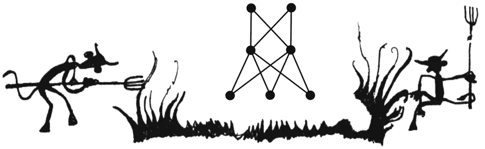

Senior Research Scientist @ AI4S, Stockholm
I intersect pure mathematics with machine learning. I am interested in algebraic and geometric aspects of neural networks, manifold/representation learning, high-dimensional statistics, and topological data analysis.

Below is a selection of my academic works, clustered by topic. For a complete list, visit my Google Scholar profile. Click to expand.
In Rubik's Abstract Polytopes, I generalize the Rubik's cube to arbitrary regular polytopes. Below, you can play with the Rubik's torus.